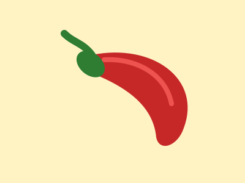

Votre écran
- Largeur de la fenêtre
- … px
- Hauteur de la fenêtre
- … px
- Taille de l'écran
- …
- Densité de pixels
- …
Visite de la ferme-école
Votre navigateur sait beaucoup de choses : la taille de votre écran, votre langue, l'adresse de la page, l'état de la connexion… Cette page les affiche en direct.
userAgent)#…)?…)Vous ouvrez la page avec file:// : certaines fonctions du navigateur sont limitées. Utilisez Live Server (http://).
Le nom de la plante est lu dans l'adresse de la page :
index.html?plante=piment. Changez-le avec les boutons, puis utilisez
les flèches de l'historique.

Choisissez une plante avec les boutons ci-dessus.
Une planche de piments reçoit son eau goutte à goutte. Ici, le minuteur est réglé sur 30 secondes pour tester (dans la vraie vie : 20 minutes).
00:30